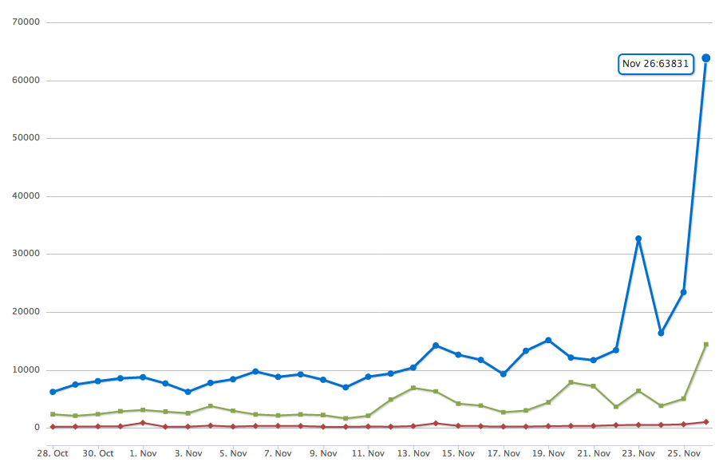

| z, ? | toggle help (this) |
| space, → | next slide |
| shift-space, ← | previous slide |
| d | toggle debug mode |
| ## <ret> | go to slide # |
| c, t | table of contents (vi) |
| f | toggle footer |
| r | reload slides |
| n | toggle notes |
| p | run preshow |
def add_default_name_and_id(options)
...
options["name"] += "[]"
if options["multiple"]
...
endUse case:
roles.each do |role|
f.check_box :role_ids,
:value => role.id, :multiple => true
end<input type="checkbox"
name="user[role_ids][]"
value="1" multiple="multiple">User.where(:active => true).pluck(:id)
# SELECT id FROM users WHERE active = 1
User.uniq.pluck(:role)
# SELECT DISTINCT role FROM users> Education.new(:user_id => 1)
ActiveModel::MassAssignmentSecurity::Error:
Can't mass-assign protected
attributes: user_id
from active_model/mass_assignment_security
/sanitizer.rb:48:in
`process_removed_attributes'
Do not let user see validation errors that he can not correct
class Article < AR::Base
validates! :author, :presence => true
end
u = User.new
u.save
# raises ActiveModel::StrictValidationFailedvalidates_presence_of :author
validates_size_of :title
validates_uniqueness_of :slug
before_filter :load_user
before_filter :require_admin_rights
after_filter :set_page_title
before_save :downcase_email_address
after_save :deliver_registration_email
before_save :generate_api_token
def self.validate(&validator)
self.validators << validator
end
def valid?
validators.all? do |validator|
validator.call(self)
end
endclass User < AR::Base
validates_size_of :name
end
class Customer < User
validates_presence_of :company
end
class TeamMember < User
validates_presence_of :role
enddef valid?
validates_presence_of(:aution) &&
validates_size_of(:title) &&
validates_uniqueness_of(:slug) &&
super
endclass CallbackChain < Array
def compile
method = []
method << "value = nil"
method << "halted = false"
callbacks = "value = !halted && (!block_given? || yield)"
reverse_each do |callback|
callbacks = callback.apply(callbacks)
end
method << callbacks
method << "value"
method.join("\n")
end
endvalidates_presence_of :userdef set_callback(*args)
add_callback_to_chain(*args)
recompile_callback_method
and_dont_forget_about_inherited_classes
end
1 + 3 ++- 2 +- 4 ++-- 19 +++---------------- 14 +++++++------- 27 +-------------------------- 30 ++++++++++++--------------- 47 ++++++++------------------- 7 ++++++- 4 ++-- 42 +++++---------------------- 19 +++---------------- 19 +++---------------- 14 ++++++++------ 5 ++--- 21 +++++++++++---------- 120 +++++++++++++------------- 26 ++++++++++++-------------- 16 ++++++---------- 45 +++++++++++++--------------
def run_callbacks(name)
runner_method = __callback_runner_name(name)
unless respond_to?(name)
define_callback_runner(name)
end
send(name)
enddef __callback_runner_name(kind)
class_id = name.hash.abs
"_run__#{class_id}__#{kind}__callbacks"
end/:controller/:action(/:id)
url_for(
:controller => :users,
:action => :show,
:id => 1
)
/:controller/(:id/):action
user_path(1)
(/locale/:locale)/page/:name
=> "pages#show"
Journey as a router backend
Makes REST less strict
Journey parses each route and converts it into
Abstract Syntax Tree
routes.map! { |r|
match_data = r.path.match(req.path_info)
match_names = match_data.names.map do |n|
n.to_sym
end
match_values = match_data.captures.map do |v|
v && Utils.unescape_uri(v)
end
info = Hash[match_names.zip(match_values).
find_all { |_,y| y }]
[match_data, r.defaults.merge(info), r]
}if options.has_key?(:action)
&& options[:action].nil?
options[:action] = 'index'
end
if options[:action] == 'index'
recall[:action] = options.delete(:action)
end# Pseudocode
def url_for(options)
options = options.reverse_merge(recall)
route = routes.find do |route|
route.match?(options)
end
route = format_route(route, options)
end user system total real
user_path(1)
0.1500 0.0000 0.1500 ( 0.150241)
users_path(1, format: :json)
1.0700 0.0100 1.0800 ( 1.079205)
(link generated 1000 times)
It takes one millisecond to create a link like this:
user_path(user, :format => "json")A page with 100 links will be generated in 100ms
jQuery("a").length // => 177
@module.module_eval -END_EVAL, __FILE__, __LINE__ + 1
remove_possible_method :#{name}
def #{name}(*args)
if #{optimize_helper?(route)} args.size == #{route.required_parts.size} !args.last.is_a?(Hash) optimize_routes_generation?
# this is fast
options = #{options.inspect}
options.merge!(url_options) if respond_to?(:url_options)
options[:path] = "#{optimized_helper(route)}"
ActionDispatch::Http::URL.url_for(options)
else
# this is slow
url_for(handle_positional_args(args, #{options.inspect}, #{route.segment_keys.inspect}))
end
end
END_EVAL
"I, based on my work with various teams, consider Rails a nice set of conventions, a fantastic routing system and a very useful ORM."
Someone comment in github.com/rails/rails
(c) Aaron Peterson
